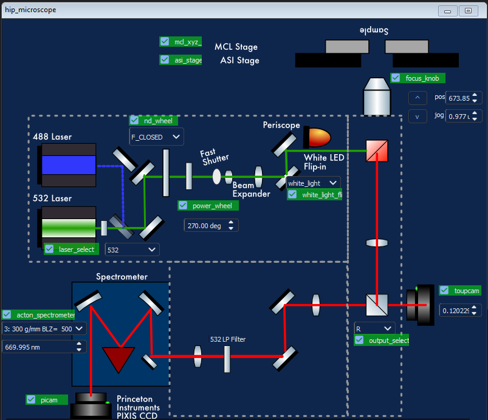
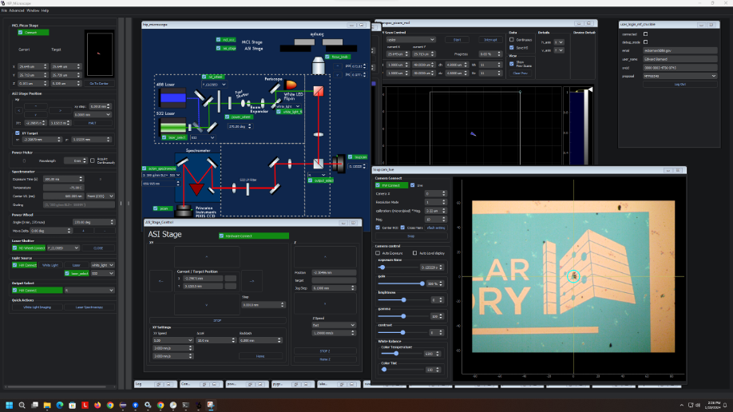
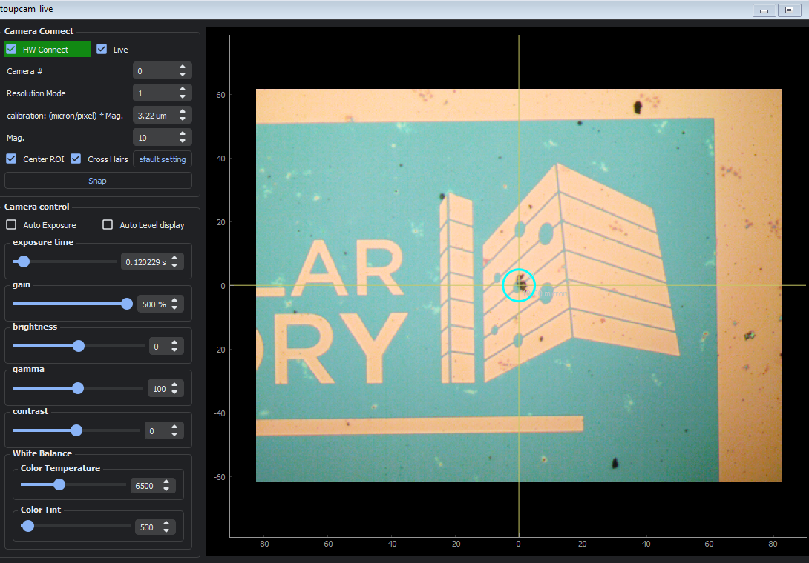
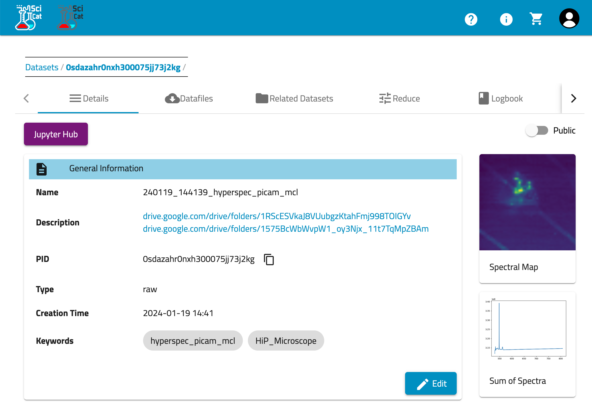

HiP Raman/PL Microscope
Instruments
Scientific Instruments at the Molecular Foundry connected to Crucible
HiP Microscope
Raman/PL mapping confocal optical microscope
This custom optical microscope can acquire
Foundry Scientist: Edward Barnard
Science
Hardware
Custom optical microscope built out of Nikon Eclipse inverted microscope body with motorized sample positioning stage. Excitation from white light LED or 300mW 532 nm diode laser. Collection via Amscope CMOS camera (for inspection) and Princeton Instrument SP300i Spectrometer and Pixis CCD for spectral detection. Most components are motorized for remote operation.
Schematic of microscope:

Software
{.img-fluid}
Computer
hip-microscope2.dhcp.lbl.gov running Windows 11. Remote access via Microsoft Remote Desktop (RDP)
Experiment Types
Toupcam Live Image view
toupcam_live
Live imaging on AMScope (toupcam) camera for viewing whitelight images of sample or laser alignment.
{.img-fluid}
High Resolution Hyperspectral Raman/PL mapping with Piezo
hyperspec_picam_mcl
Large-area Hyperspectral Raman/PL mapping with ASI stage
picam_asi_hyperspec_scan
Same as hyperspec_mcl_picam but uses coarse positioner asi_xyz_stage to scan. This will give you a much larger scan area (10 mm vs 50µm) at the cost of reduced spatial resolution (best positioning accuracy around 1µm)
Laser Annealing of Qubits
Processing and Analysis
Options for processing and analyzing data from the HiP microscope
Hyperspectral imaging in Crucible
hyperspec_picam_mcl datasets are automatically ingested into Crucible and can be viewed on SciCat or accessed via Google Drive.
